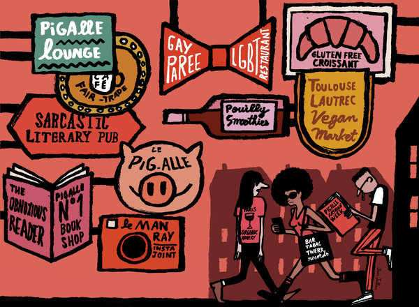

The New York Times | Opinion
How Hipsters Ruined Paris

By THOMAS CHATTERTON WILLIAMS
This was the original “gay Paree” on display in Edouard Manet’s “Bar at the Folies-Bergère,” a Bohemia of near-mythical proportions in which every tier of society — from the well heeled to the creative to the horizontally employed — collided in the district’s cafes, theaters and cabarets. It was the Paris of Alexandre Dumas, Victor Hugo, Gustave Moreau and Pierre-Auguste Renoir.
Paris has long been a palimpsest of different cities, each new iteration grafted on top of the still visible last, spanning the extremes of human excellence and beauty and, just as crucially, filth and squalor. The area around Pigalle in particular — which American G.I.’s aptly called “Pig Alley” — was always a mixture of both, its seediness informing the artistic production and spirit of numerous generations of inhabitants. You can see it in Edgar Degas’s brush strokes and hear it in Edith Piaf’s voice.
But it’s disappearing. Today, the neighborhood has been rechristened “South Pigalle” or, in a disheartening aping of New York, SoPi. Organic grocers, tasteful bistros and an influx of upscale American cocktail bars are quietly displacing the pharmacies, dry cleaners and scores of seedy bar à hôtesses that for decades have defined the neighborhood.
These “hostess bars,” marked by barely dressed women perched in the windows, are the direct descendants of the regulated brothels that thrived here from Napoleon’s time until the postwar purge of the 1940s. The French daily Libération reports that in 2005 there were 84 such establishments around Pigalle. Today there are fewer than 20. Their disappearance is a watermark of the quarter’s rapid loss of grit and character alike.
When my wife and I first moved here in 2011, I wasn’t sure what to make of living in the middle of a functioning red-light district. Our neighborhood, though safe and well on its way to gentrification, remained funky in the original sense of the term. In addition to cigarette smoke and baking bread, there was the whiff of dirt and sex in the air. It took a while for me to get used to the tap-tapping on windows — or hissing and tongue clicking from open doors — that greeted me as I passed the bars on my way to fill a prescription or buy a bottle of Pouilly-Fumé.
I have never quite gotten used to the transsexual hookers who traipse the Boulevard de Clichy outside the area’s various sex shops and with whom I must share the carnivalesque sidewalk on my way in and out of the post office. Frankly, they make me uncomfortable.
But I’ve come to see that unease as a good thing the longer I stay in this corner of France, a country where the world’s oldest profession continues to enjoy a special patrimonial status and where, try as it might, the government can’t seem to un-sew that tawdry patch from the national quilt. (It is now considering criminalizing johns, which prompted incensed writers and luminaries to pen a spirited manifesto in protest.)
We should be grateful to be jolted from our anesthetized routines, confronted when we can be with surroundings and neighbors that are not injection-molded to the contours of our own bobo predilections. Too much of modern urban life revolves around never feeling less than fully at ease; about having even the minutest of experiences tailored to a set of increasingly demanding and homogeneous tastes — from the properly sourced coffee grounds that make the morning’s flat white to the laboriously considered iPod soundtracks we rely on to cancel the world’s noise. The logical extension is to “curate” our urban spaces like style blogs or Pinterest boards representing a single, self-satisfied and extremely sheltered expression of middle- and upper-middle-class sensibility.
Outside my window, and adjacent to a baby boutique that stocks cashmere swaddle blankets, is a nondescript Asian massage parlor. On nice summer days, there is one masseuse who likes to prop open the door, pull her chiropractic table into the fresh air and sunbathe between clients. Once I watched a well-turned-out mother with toddler approach as the woman was smoking a cigarette. Instead of giving the kind of not-in-my-backyard glare I imagined her Park Slope counterpart might unleash, she just asked the masseuse for a light. They shared a few friendly words before going their separate ways, leaving me to wonder why I thought that should be odd.
SUCH encounters are getting rarer by the week, but they remind me that genuinely engaging with an urban space means encountering and making room for an assortment of lifestyles and social realities — some appealing, some provocative, and some repulsive. This is what the Situationists meant by psychogeography, or, as Guy Debord put it, the “specific effects of the geographical environment (whether consciously organized or not) on the emotions and behavior of individuals.”
Down the street, where Henri de Toulouse-Lautrec once had his studio, you now must pass a store called “Pigalle” — a high-end streetwear purveyor — and then Buvette Gastrotèque, the handsome new Paris outpost of a faux-French restaurant and bar from the West Village.
From there a left turn puts you at the intersection of Rue Victor Massé and Rue Frochot, where, in the space of one half-block, three hostess bars have recently been shuttered and reopened as upscale cocktail lounges. That number includes the famous Dirty Dick, now a Polynesian-themed luxury rum bar, with the name and grungy facade kept ironically intact. Inside, the atmosphere is far more beach bum than bordello; the most subversive element is a smoking room in the back.
Directly opposite, beside a dilapidated DVD shop, black-clad bouncers assemble a velvet rope each night in front of a pristine new bar called Glass. It is the brainchild of a polyglot team of N.Y.U. grads who have decided (correctly, judging by their success) that what Parisians want most these days are tacos, hot dogs and homemade tonic water in their G & Ts. Le F’Exhib — the lone holdout on the block, where the girls and the ravaged exterior seemed to age in tandem — finally closed its doors this fall.
And so a vivid and storied layer of authentic Paris is being wiped out not by not-in-my-backyard activism, government edict or the rapaciousness of Starbucks or McDonald’s but by the banal globalization of hipster good taste, the same pleasant and invisible force that puts kale frittata, steel-cut oats and burrata salad on brunch tables from Stockholm to San Francisco.
Drifting through these streets, as they are scrubbed clean and homogenized before my eyes, my thoughts turn to Blaise Pascal, who once wrote “a man does not show his greatness by being at one extremity, but rather by touching both at once.” The same, of course, could be said of neighborhoods. The nicer this one gets, the more it seems to feel like the one I left behind in Brooklyn.
People say you had to be in Paris in the ’20s or New York in the ’80s. The sad truth of our contemporary moment seems to be only that you no longer need to be anywhere in particular anymore.
The brunch is all the same.

_-_Google_Art_Project_2.jpg)


.jpg)